👁 STONEBREAKING — Sahne Galerisi
28.07.2026 12:50:32 · http://localhost:8899/
📸 26 kare
✓ 26 temiz
⚠ 0 dikkat
Perdeler (13)
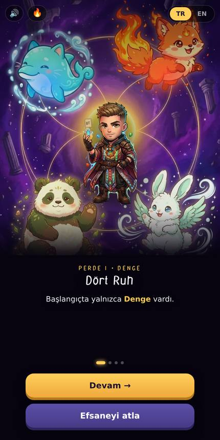
perde_0_0
Dört Ruh
ch1_denge.webp · kırpma %22
odak center 47% · blok %42
✓ temiz
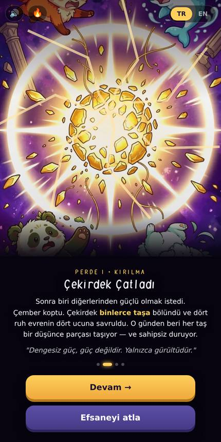
perde_0_1
Çekirdek Çatladı
ch2_kirilma.webp · kırpma %35
odak center 49% · blok %42
✓ temiz
perde_0_2
Sen Yeni Taşkıran'sın
ch3_cagri.webp · kırpma %40
odak center 50% · blok %46
✓ temiz
perde_0_3
Taş Nasıl Kırılır?
ch3_cagri.webp · kırpma %39
odak center 50% · blok %45
✓ temiz
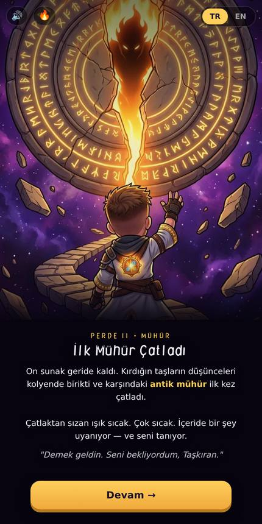
perde_1_0
İlk Mühür Çatladı
ch10_muhur.webp · kırpma %32
odak center 43% · blok %39
✓ temiz
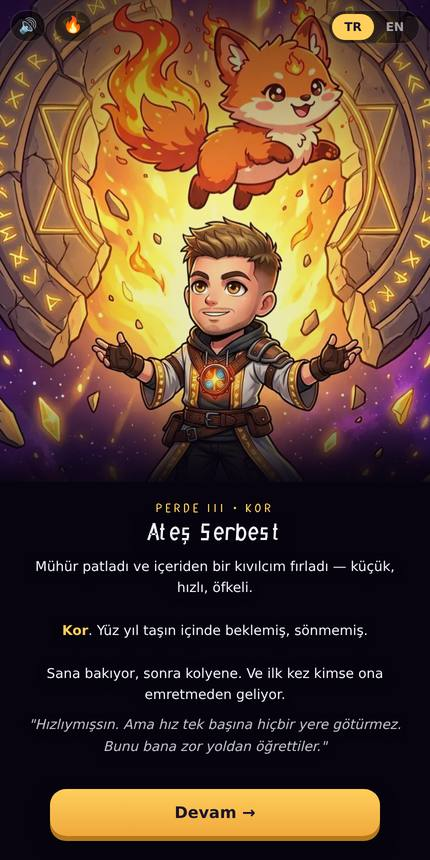
perde_2_0
Ateş Serbest
a20.webp · kırpma %37
odak center 47% · blok %44
✓ temiz
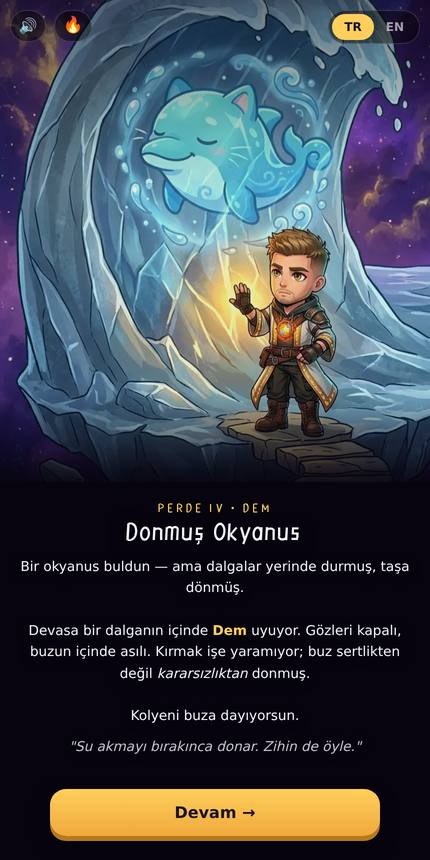
perde_3_0
Donmuş Okyanus
a30.webp · kırpma %37
odak center 47% · blok %44
✓ temiz
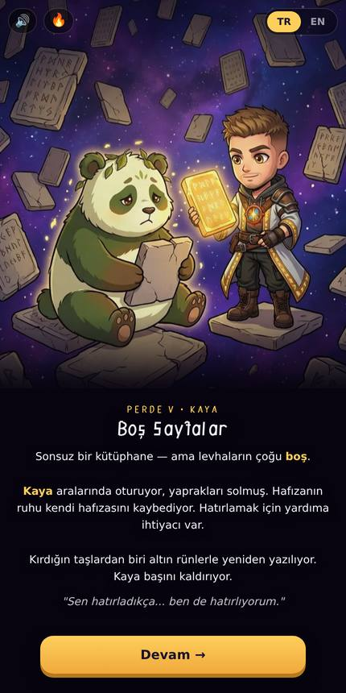
perde_4_0
Boş Sayfalar
a40.webp · kırpma %25
odak center 51% · blok %44
✓ temiz
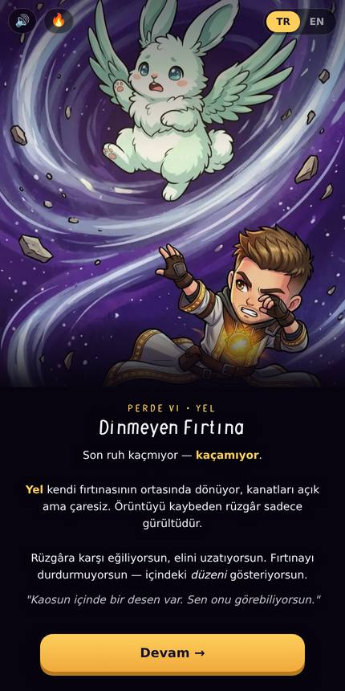
perde_5_0
Dinmeyen Fırtına
a50.webp · kırpma %37
odak center 46% · blok %44
✓ temiz
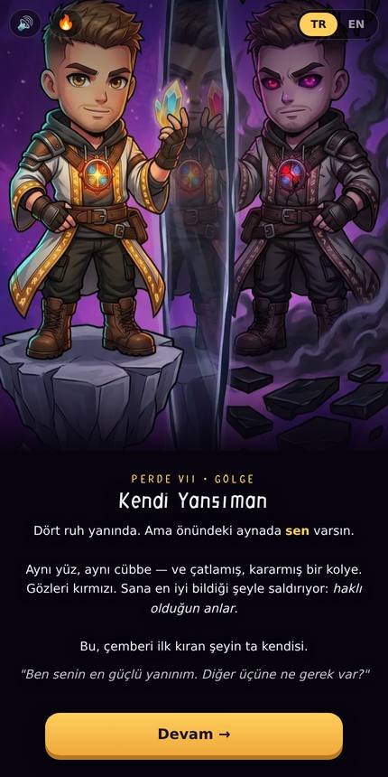
perde_6_0
Kendi Yansıman
a60.webp · kırpma %35
odak center 47% · blok %42
✓ temiz
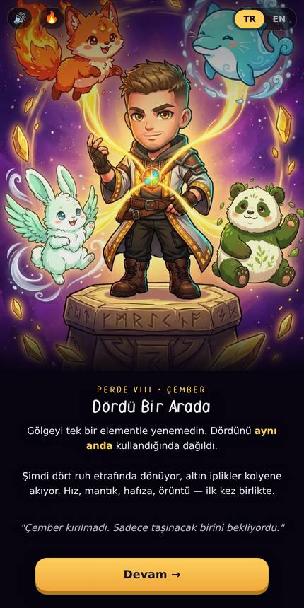
perde_7_0
Dördü Bir Arada
a70.webp · kırpma %18
odak center 47% · blok %39
✓ temiz
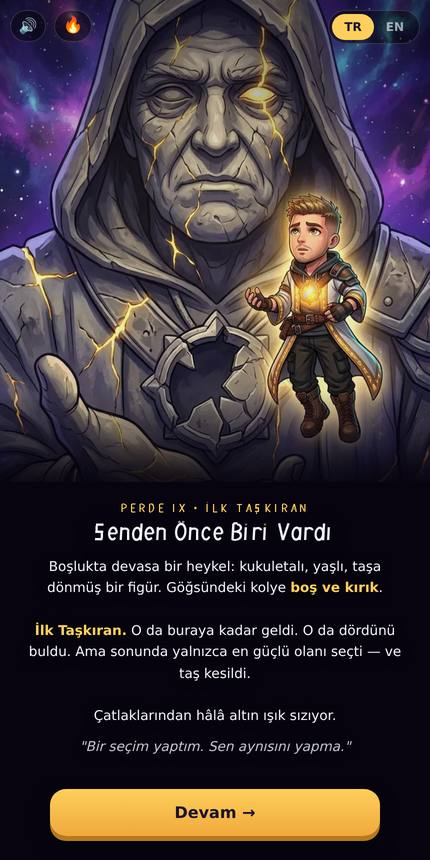
perde_8_0
Senden Önce Biri Vardı
a85.webp · kırpma %25
odak center 46% · blok %44
✓ temiz
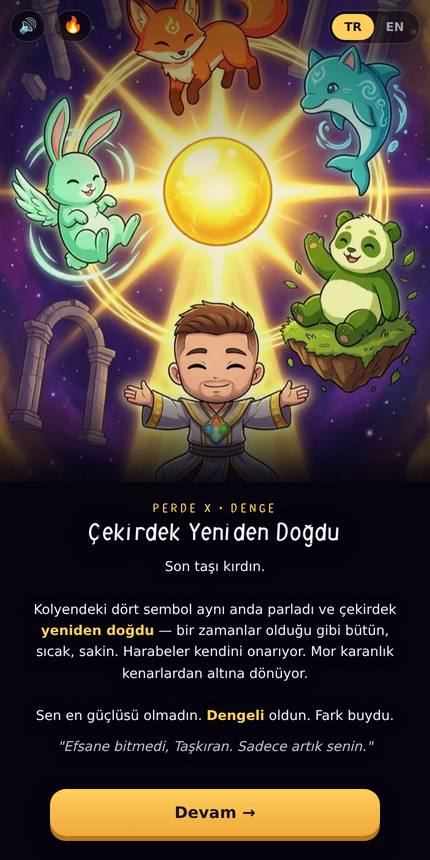
perde_9_0
Çekirdek Yeniden Doğdu
a100.webp · kırpma %25
odak center 50% · blok %44
✓ temiz
Günlük Sahneleri (8)
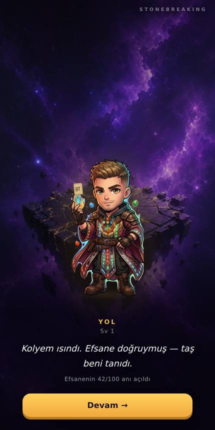
sahne_sv1
Yol
n01.webp
✓ temiz
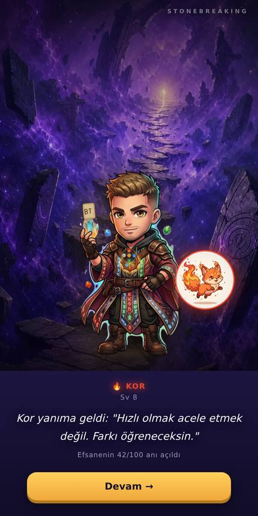
sahne_sv8
🔥 Kor
s_yol.webp
✓ temiz
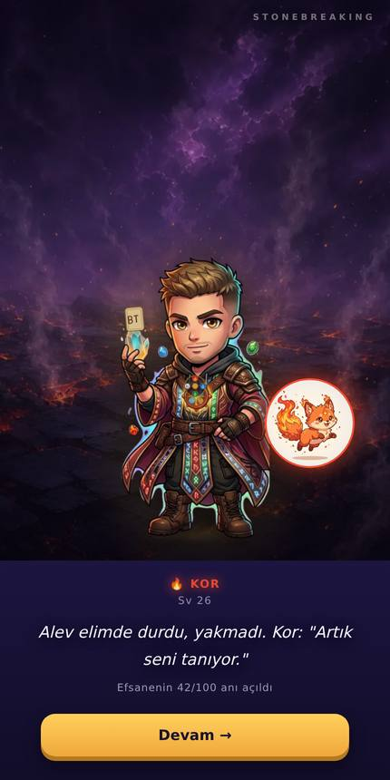
sahne_sv26
🔥 Kor
n13.webp
✓ temiz
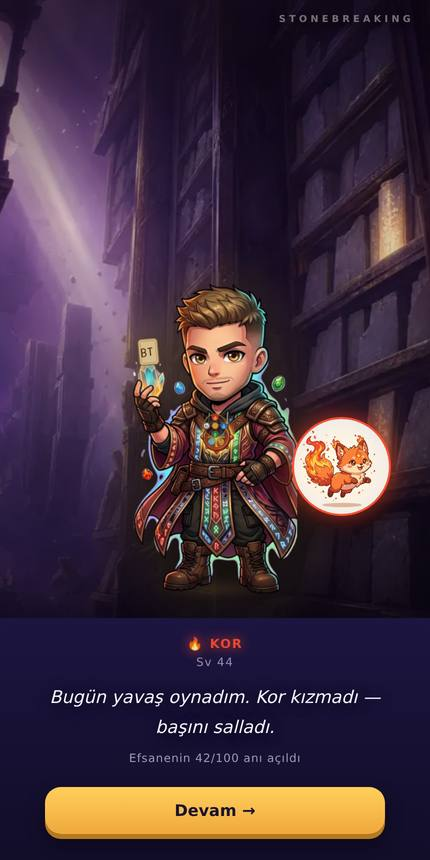
sahne_sv44
🔥 Kor
n05.webp
✓ temiz
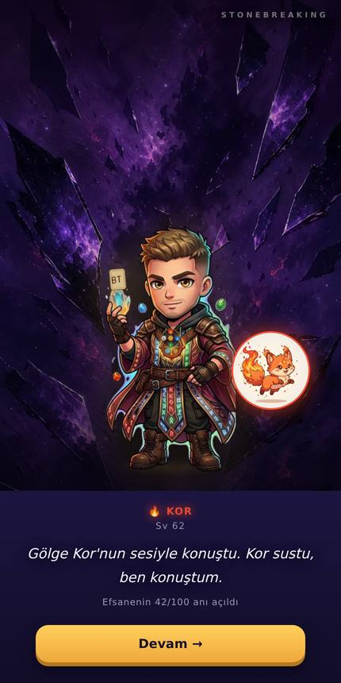
sahne_sv62
🔥 Kor
n17.webp
✓ temiz
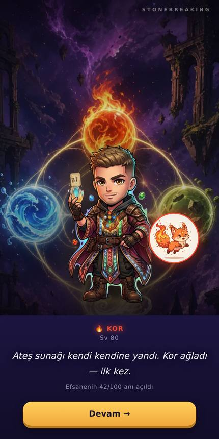
sahne_sv80
🔥 Kor
n08.webp
✓ temiz
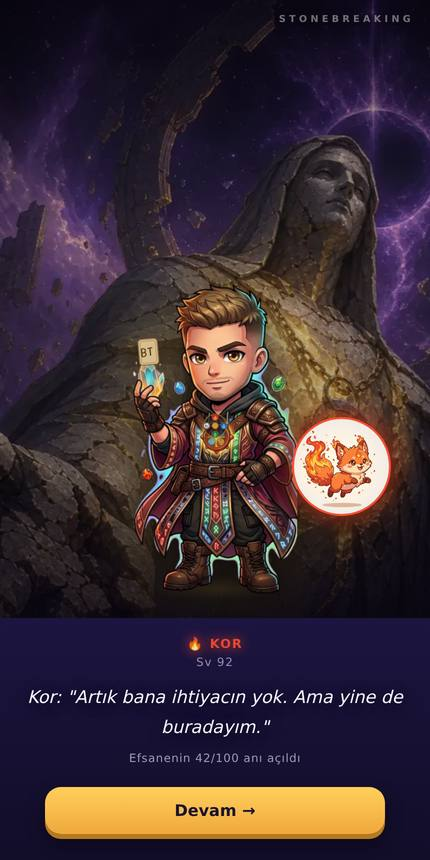
sahne_sv92
🔥 Kor
n09.webp
✓ temiz
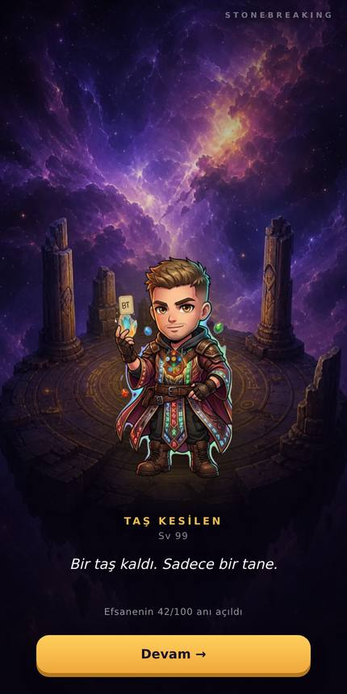
sahne_sv99
Taş Kesilen
s_sunak.webp
✓ temiz
Ekranlar (5)
 menu
✓ temiz
menu
✓ temiz
 bilgelik
✓ temiz
bilgelik
✓ temiz
 golge
✓ temiz
golge
✓ temiz
 lobi
✓ temiz
lobi
✓ temiz
 tahta
✓ temiz
tahta
✓ temiz